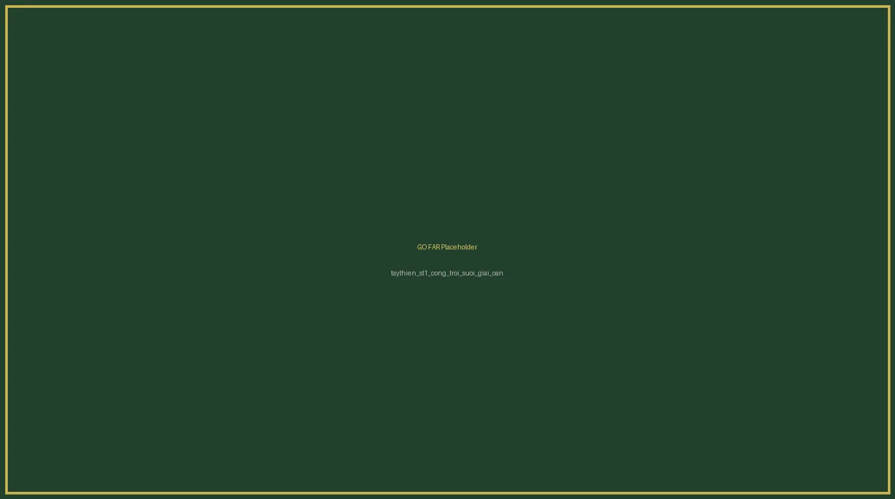

🧭 1. Tổng Quan Danh Thắng Tây Thiên — Thánh Địa Linh Thiêng Từ Thời Hùng Vương
Theo truyền thuyết dân gian và thư tịch cổ, vùng Tây Thiên từ thời Hùng Vương đã là chốn linh sơn nơi Quốc Mẫu Lăng Thị Tiêu — vợ Hùng Vương thứ 7, người được tôn thờ là Mẫu Đệ Tam Thượng Ngàn cai quản miền rừng núi — ngao du và hiển thánh. Suốt chiều dài lịch sử, từ nhà Đinh, nhà Lý đến các triều đại phong kiến về sau, hơn 50 điểm thờ tự đã được xây dựng và hình thành tự nhiên trải khắp sườn núi Tam Đảo, tạo nên quần thể di tích có quy mô và chiều sâu tâm linh hiếm thấy. Suối Thác Bạc, Giếng Thần, Đền Thỏng (Đền Hạ), Đền Mẫu Sinh và đặc biệt là Đền Thượng Tây Thiên tôn thờ Quốc Mẫu trên đỉnh núi đều hội tụ linh khí đất trời hùng vĩ của dãy Tam Đảo.
Từ năm 2004 đến 2007, Thiền Viện Trúc Lâm Tây Thiên được xây dựng hoàn thành trên lưng chừng núi theo phong cách kiến trúc Phật giáo truyền thống của Thiền phái Trúc Lâm Yên Tử — do Thiền sư Thích Thanh Từ chủ trì. Thiền viện có quy mô lớn với Chính điện trang nghiêm, Vườn Thiền yên tĩnh và tòa chuông trống uy nghiêm, là điểm tu học và hành hương quan trọng bậc nhất của hệ phái Trúc Lâm tại miền Bắc. Khu vực Tây Thiên đã được Nhà nước xếp hạng Di tích Lịch sử Văn hóa Quốc gia và công nhận là Danh thắng Quốc gia, Lễ hội Tây Thiên tháng 2 Âm lịch được vinh danh là Di sản Văn hóa Phi vật thể Quốc gia.
📜 2. Nghi Thức Hành Hương & Tôn Trọng Linh Khí Núi Tam Đảo
Tây Thiên là chốn linh sơn kết hợp giữa Phật giáo Trúc Lâm và tín ngưỡng thờ Mẫu ngàn năm. Hành giả lên núi cần giữ tâm thanh tịnh, tôn trọng thiên nhiên và tuân thủ lễ nghi:
🏮 3 Quy Chuẩn Văn Minh Khi Hành Hương Tây Thiên
🌿 Bảo Vệ Rừng Nguyên Sinh Tam Đảo
Rừng nguyên sinh Tây Thiên là di sản sinh thái quý báu: tuyệt đối không hái lá bẻ cành, không xả rác dọc đường hành hương và không gây ồn ào làm kinh động sự yên tĩnh thiêng liêng của núi rừng Tam Đảo.
🙏 Nghiêm Trang Khi Vào Đền Thờ Quốc Mẫu
Đền Thượng và các đền thờ Quốc Mẫu, Bà Chúa Thượng Ngàn là chốn linh thiêng trang nghiêm: ăn mặc kín đáo, giày dép để ngoài, dâng lễ chay thuần khiết (hoa tươi, hương trầm, trái cây), không đốt vàng mã ở cổng đền và không rải tiền lẻ bừa bãi.
🧘 Tôn Trọng Sinh Hoạt Tu Học Tại Thiền Viện
Thiền Viện Trúc Lâm Tây Thiên là nơi chư Tăng thường trú tu học: đi lại khoan thai, không ồn ào tại Chính điện và Vườn Thiền, tắt chuông điện thoại và chỉ chụp ảnh ở ngoài khu vực sinh hoạt nội viện của chư Tăng.
⛩️ 3. Lộ Trình 6 Trạm Tây Thiên — Từ Cổng Trời Đến Đỉnh Linh Sơn
Lộ trình 6 trạm đưa hành giả từ Cổng Trời Tây Thiên qua Suối Giải Oan thanh tẩy tâm hồn, dừng lễ Đền Thỏng thờ Bà Chúa Thượng Ngàn, thiền hành tại Thiền Viện Trúc Lâm, cầu duyên tại Giếng Thần Đền Mẫu Sinh, lên Đền Thượng thờ Quốc Mẫu và ngắm toàn cảnh Tam Đảo kỳ vĩ trước khi hồi hướng viên mãn.
Hành Trình Hành Hương Thiền Viện Trúc Lâm Tây Thiên — Núi Tam Đảo
Trải nghiệm không gian rừng nguyên sinh hùng vĩ, tiếng suối reo trong lành và lời kinh thiền phái Trúc Lâm vang vọng giữa núi trời Tây Thiên.

Cổng Trời Tây Thiên sừng sững giữa vòm cây rừng nguyên sinh như ngưỡng cửa thoát tục, nơi hành giả dừng bước rửa tay tại dòng Suối Giải Oan trong vắt chảy ra từ lòng núi Tam Đảo — nghi thức thanh tẩy thân tâm trước khi bước vào cõi linh thiêng.
🏔️ Linh Khí Cổng Trời Tây Thiên
- Cổng Trời đánh dấu ranh giới giữa thế giới thường nhân và cõi linh thiêng Tây Thiên — nơi khí trời mát lạnh quanh năm dù giữa hè nóng bức.
- Từ Cổng Trời nhìn lên, những tầng rừng nguyên sinh xanh thẳm phủ kín triền núi Tam Đảo tạo cảnh quan hùng vĩ ít nơi nào sánh được.
- Khởi hành sớm (trước 07h30) để tránh đông người và tận hưởng sương sớm bảng lảng huyền ảo quanh Cổng Trời.
💧 Suối Giải Oan — Dòng Nước Linh Thiêng
- Suối Giải Oan tương truyền từ xa xưa là nơi Quốc Mẫu Lăng Thị Tiêu dùng để gột rửa, ban phép lành cho dân làng.
- Nghi thức rửa tay và vốc nước lên mặt tại suối mang ý nghĩa gột bỏ điều xấu, mang theo tâm thanh tịnh vào hành trình.
- Nước suối trong lành mát lạnh ngay cả những ngày hè; tuyệt đối không xả rác hay nước thải xuống suối.
CHỨNG NHẬN HÀNH HƯƠNG TÂY THIÊN VIÊN MÃN
Chúc mừng bạn đã hoàn thành trọn vẹn lộ trình hành hương 6 trạm tại Danh thắng Quốc gia Tây Thiên — Thiền Viện Trúc Lâm, từ Cổng Trời đến Đền Thượng thờ Quốc Mẫu Lăng Thị Tiêu. Nguyện cầu Quốc Mẫu và mười phương Chư Phật gia hộ gia đình bình an, quốc thái dân an, vạn sự cát tường.
🧭 4. Lịch Trình 1 Ngày Tây Thiên — Rừng Tam Đảo & Hành Hương Quốc Mẫu
Hành trình 1 ngày lên Danh thắng Quốc gia Tây Thiên (cách Hà Nội ~85km theo hướng Vĩnh Yên – Tam Đảo, khoảng 1 giờ 30–45 phút tùy điểm xuất phát):
Buổi Sáng (06h00 – 11h00): Cổng Trời, Đền Thỏng & Thiền Viện Trúc Lâm
- 06h00: Xuất phát từ Hà Nội theo hướng Vĩnh Phúc – Tam Đảo lên xã Đại Đình.
- 07h30: Mua vé cáp treo hoặc theo đường hành hương cổ, bước qua Cổng Trời Tây Thiên, rửa tay tại Suối Giải Oan thanh tẩy tâm hồn.
- 08h30: Dừng lễ tại Đền Thỏng (Đền Hạ) và Am Bà Chúa Thượng Ngàn, trước khi lên chiêm bái Thiền Viện Trúc Lâm Tây Thiên — dâng hương Chính điện, dạo bước tĩnh tâm trong Vườn Thiền xanh mát.
Buổi Trưa (11h15 – 13h30): Cơm Chay Rừng Núi & Nghỉ Ngơi Dưới Tán Rừng
Dùng bữa thanh đạm tại khu dịch vụ chân núi hoặc mang cơm nắm ăn ngoài trời dưới bóng rừng Tam Đảo; thưởng thức chè lam, khoai sọ và su su Tam Đảo đặc sản nổi tiếng vùng núi Vĩnh Phúc.
Buổi Chiều (13h45 – 17h00): Giếng Thần, Đền Thượng Quốc Mẫu & Toàn Cảnh Tam Đảo
- 13h45: Cầu duyên tại Đền Mẫu Sinh & Giếng Thần linh thiêng nổi tiếng.
- 14h30: Lên Đền Thượng Tây Thiên thờ Quốc Mẫu Lăng Thị Tiêu — dâng hương và đọc văn khấn trang nghiêm trước ngai Quốc Mẫu.
- 15h30: Ngắm toàn cảnh thung lũng Vĩnh Phúc từ đỉnh Tam Đảo, hồi hướng công đức rồi xuôi núi về Hà Nội.